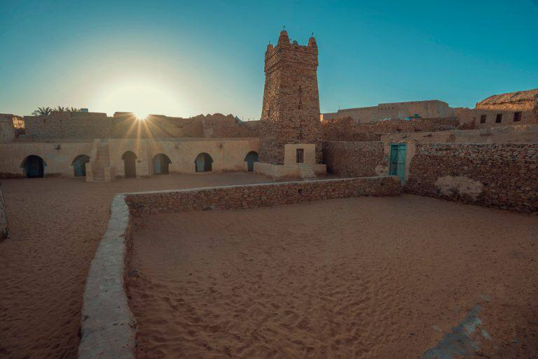

شنقيط- موريتانيا

موريتانيا هي الجوهرة الخفية الغائبة عن خريطة السياحية
في الوطن العربي. في صحراء موريتانيا تقع بلدة شنقيط
التراثية والتي تعد الوجهة السياحية المفضلة لدي كل زوار
موريتانيا. لذلك ننصحك أنت أيضا بالتوجه لزيارتها اثناء
تواجدك في موريتانيا لتتنفس عبق التاريخ وتتعرف علي
الثقتفة الموريتانية من موطنها الأصلي. يذكر أن كلمة
شنقيط تعني في العربية "عيون الخيل "